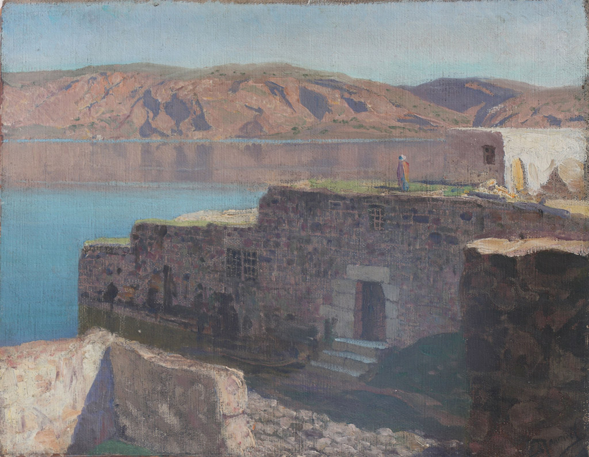
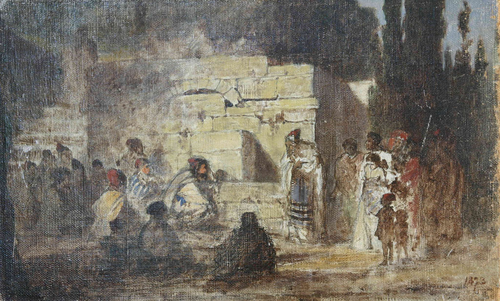
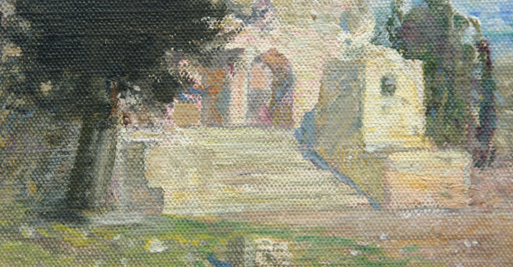
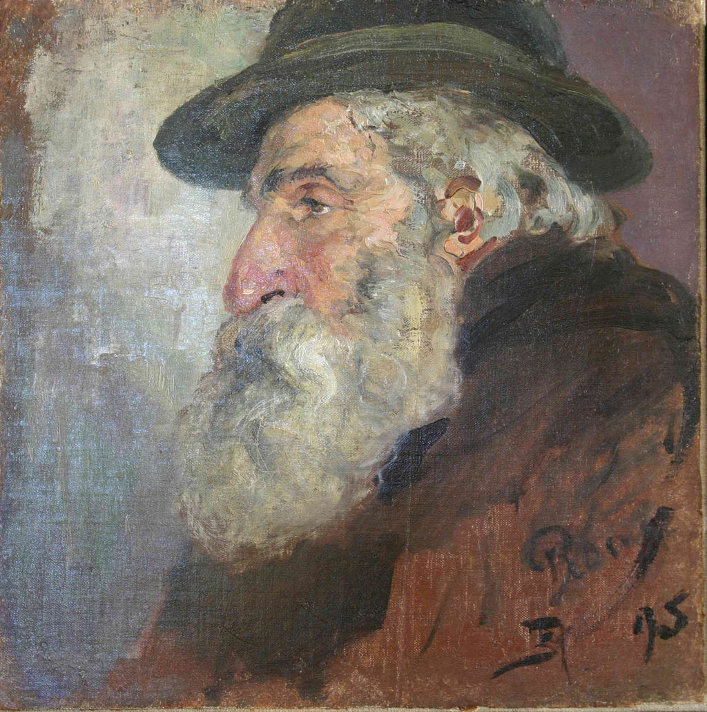

Василий Поленов на Святой Земле
Мечтая запечатлеть края, где проповедовал Иисус из Назарета, Василий Дмитриевич пустился в путешествие по святым местам.
Для летних выставок музеи-усадьбы всякий раз готовят интересные, особенно привлекающие публику сюжеты. Экспозиции нередко «обрамляются» фестивалями, где звучит музыка, стихи и проза, а на открытом воздухе играются спектакли. Музей-заповедник В. Д. Поленова в Тульской области безусловный в этом отношении лидер.
«Василий Поленов на Святой Земле» — выставка, посвященная знаменитому живописному циклу «Из жизни Христа», «Евангельскому кругу», как его называл сам художник, считавший проект «главным трудом своей жизни». Мечтая запечатлеть те края, где проповедовал Иисус из Назарета, увидеть храм, где произошли события, о которых собирался писать картину «Христос и грешница», Василий Дмитриевич пустился в путешествие по святым местам, побывал в Иерусалиме, Иерихоне, Тивериаде, Иорданской долине, на берегу Мертвого моря, в Самарии и написал огромное количество этюдов. Во время поездки на Восток, осуществленной дважды (в 1881–1882 и 1899 годах), в работах, созданных непосредственно на пленэре, с новой силой проявился необычайный талант Поленова-пейзажиста, его умение тонко и волнительно передавать настроения: освещенные закатом вершины южных гор, пятна кипарисов на синем небе.
На открывающейся выставке впервые будут показаны такие живописные произведения из евангельского цикла, как «Пределы Тирские», «Марфа приняла Его в дом свой», «За кого Меня почитают люди?», этюды к полотну «Христос и грешница», а также графические работы Поленова, связанные с работой над картинами евангельского цикла, фотографии из путешествий на Восток, записные книжки и рукопись литературно-философского сочинения В. Д. Поленова «Иисус из Галилеи». Зрителю предстоит увидеть также созданный Поленовым подготовительный портрет «И. И. Левитан в восточном костюме» 1884 года (Исаак Ильич Левитан позировал для центрального образа Христа) и полотно «Тивериада», недавно поступившее в коллекцию музея. К выставке приурочен Международный фестиваль искусств «В поисках земли обетованной».

«И. И. Левитан в восточном костюме»
1884

«Тивериада»

Этюд к картине «Христос и грешница»
1873

Этюд «Храм Соломона в Иерусалиме»
1881 – 1882 (?)

«Голова старого еврея в шляпе»
1884
источник